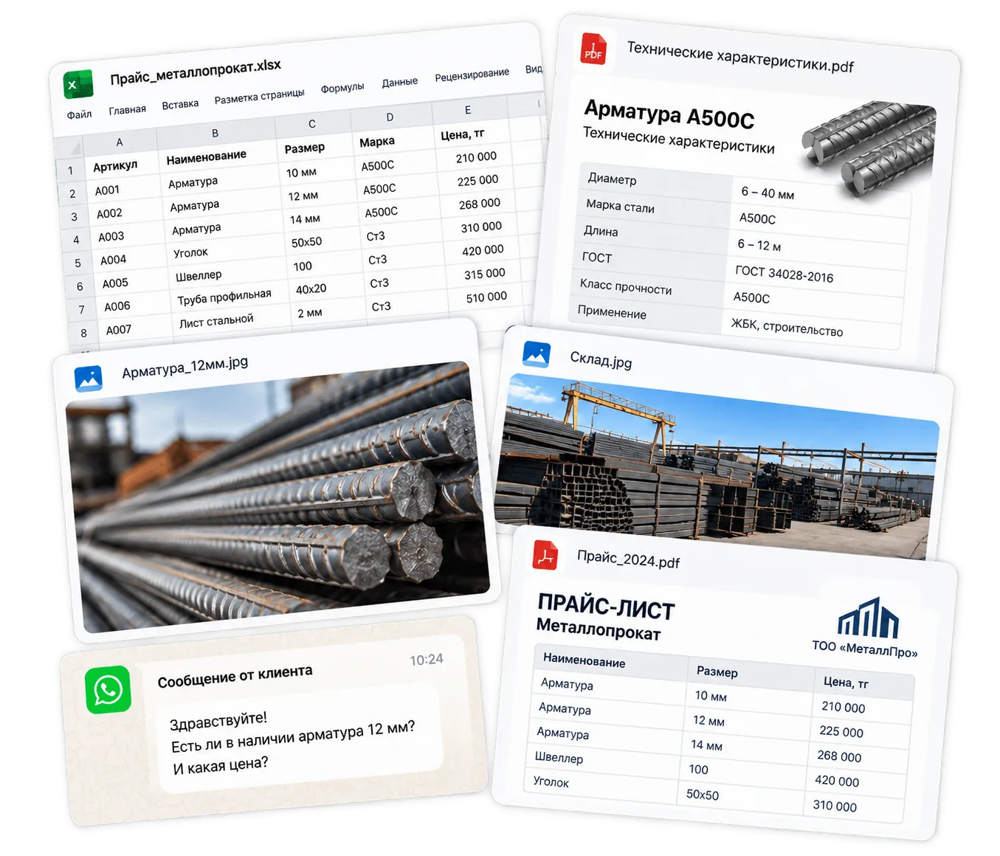
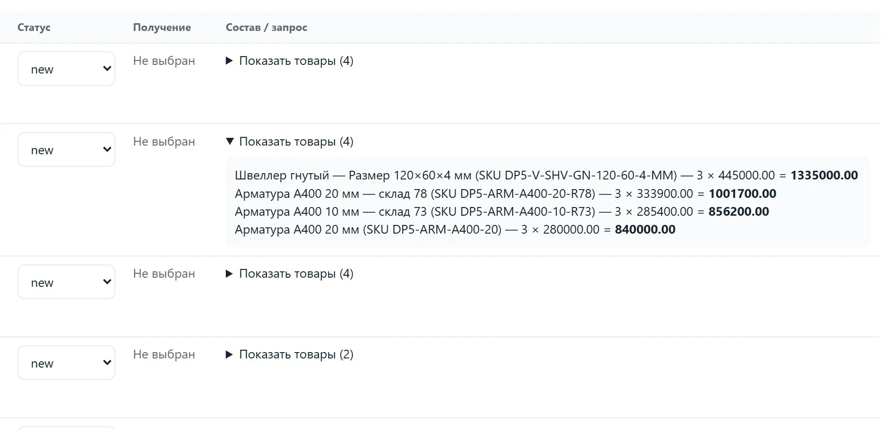

Находит
Поиск, категории, фильтры и сортировка помогают пройти большой ассортимент.
Покупатель сам находит, сравнивает и собирает нужные позиции. Менеджер подключается уже к конкретному запросу.

*Срок зависит от объёма и состояния исходных данных.
Прайс — в таблице. Фото — в переписке. Характеристики и документы — по запросу. Менеджер помогает собрать всё в одну картину.

Не вместо менеджера. До менеджера — самостоятельный поиск и предварительный выбор. После — консультация, цена, наличие, условия и сделка.
Поиск, категории, фильтры и сортировка помогают пройти большой ассортимент.
Фото, характеристики и документы собраны в карточке товара.
Нужные позиции, количество и комментарий складываются в один список.
Менеджер получает конкретное обращение и продолжает продажу.
Он подключается там, где нужен человек: уточнить выбор, подтвердить наличие, назвать индивидуальную цену, обсудить условия и закрыть сделку.

При этом роль менеджера сохраняется там, где нужны консультация и обсуждение условий сделки.
Gartner · опрос 646 B2B-покупателей · 2025 ↗Начинаем с данных, которые у вас уже есть. Sito загружает существующий ассортимент из Excel или CSV.
Ваш существующий ассортимент.
Товары, категории и характеристики.
Доступную по одной ссылке.
Не нужно вручную создавать каждую карточку товара.
Для товаров автоматически создаются отдельные страницы с базовой SEO-настройкой. Не нужно вручную настраивать каждую товарную страницу перед публикацией.
Демо — это реальный сценарий покупателя: поиск, фильтры, карточки и список выбранных позиций.

Sito показывает, как люди работают с ассортиментом — без обещаний «магического роста продаж».
Запросы, которые вводят покупатели.
Товары, которые добавляют в список.
Запросы без подходящего результата.
У вас большой или сложный ассортимент.
Покупателю важно сначала разобраться в товарах и параметрах.
Цена, наличие или условия часто уточняются у менеджера.
Вам нужен каталог, а не ещё один интернет-магазин с корзиной и оплатой.
Разовая подготовка каталога и ежемесячная подписка на платформу.
Подготовка и запуск каталога под ассортимент компании + использование платформы.
Обсудить подключение →Цена фиксируется на 12 месяцев. Сначала покажем, как Sito выглядит на ваших товарах.
Хочу в пилот →Нет, если ассортимент есть в Excel или CSV. Данные загружаются из существующего файла.
Нет. Покупатель самостоятельно проходит предварительный выбор, а менеджер подключается к консультации, наличию, цене, условиям и сделке.
Для первого взаимодействия обязательная регистрация не нужна. Каталог открывается по ссылке в браузере.
От 3 рабочих дней. Точный срок зависит от объёма и состояния исходных данных.
Базовая SEO-настройка товарных страниц создаётся автоматически по умолчанию. Это техническая основа для индексации, а не обещание конкретных позиций или трафика из поиска.
Пришлите текущий Excel или CSV. Посмотрим структуру и покажем, как ваш ассортимент может выглядеть в Sito.
Написать в WhatsApp ↗